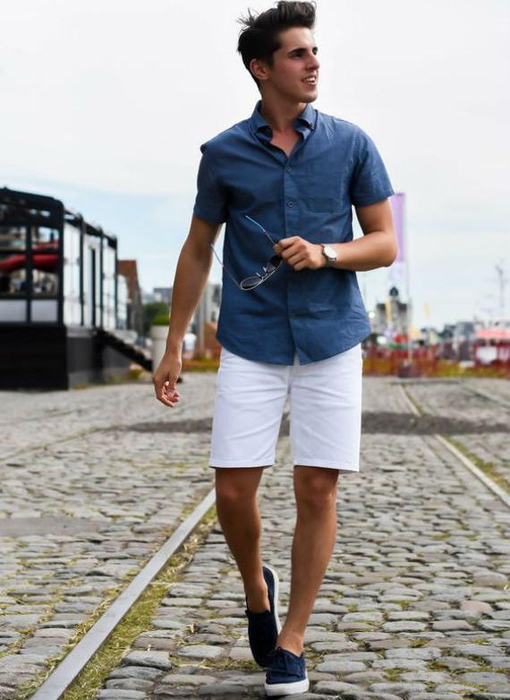
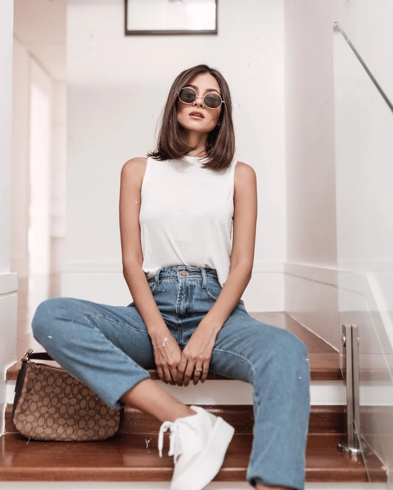
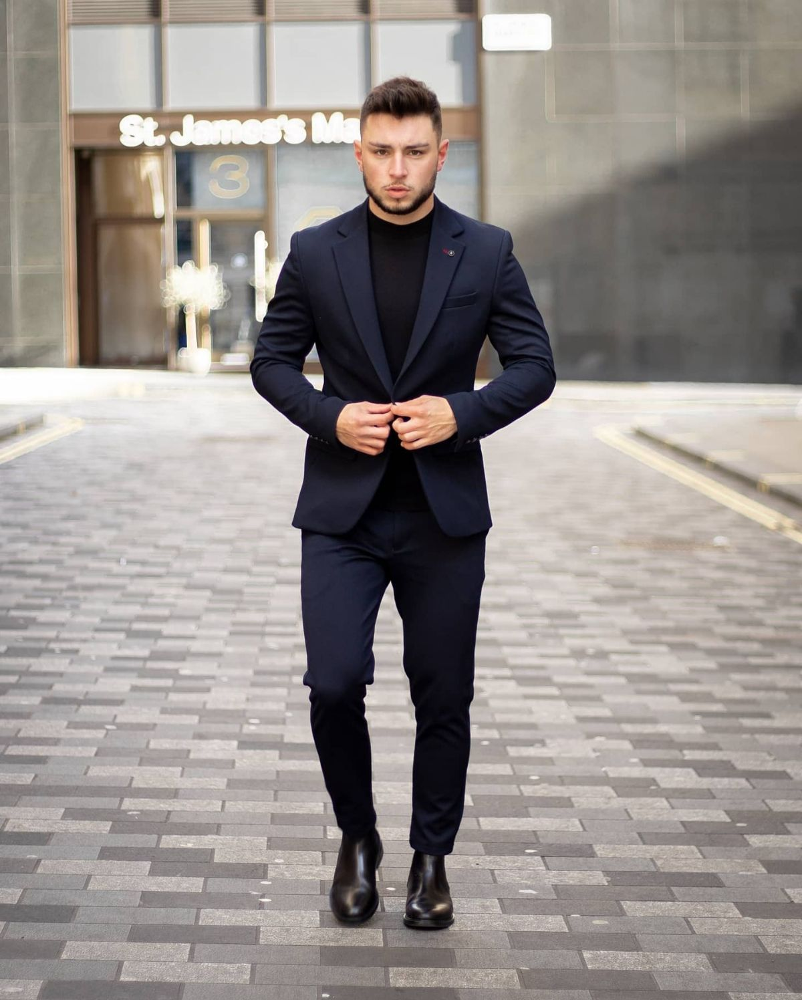
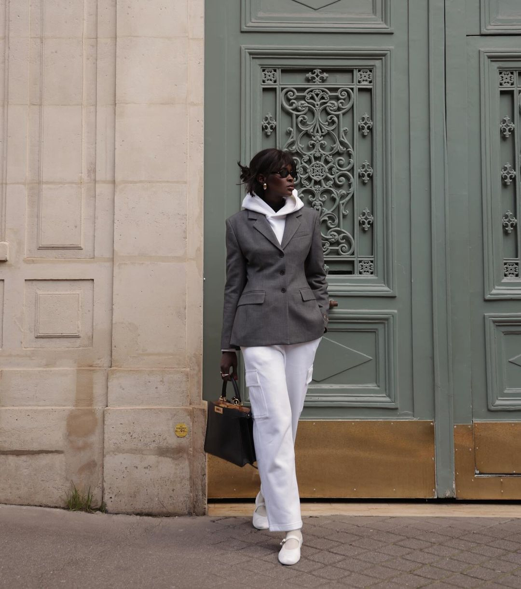
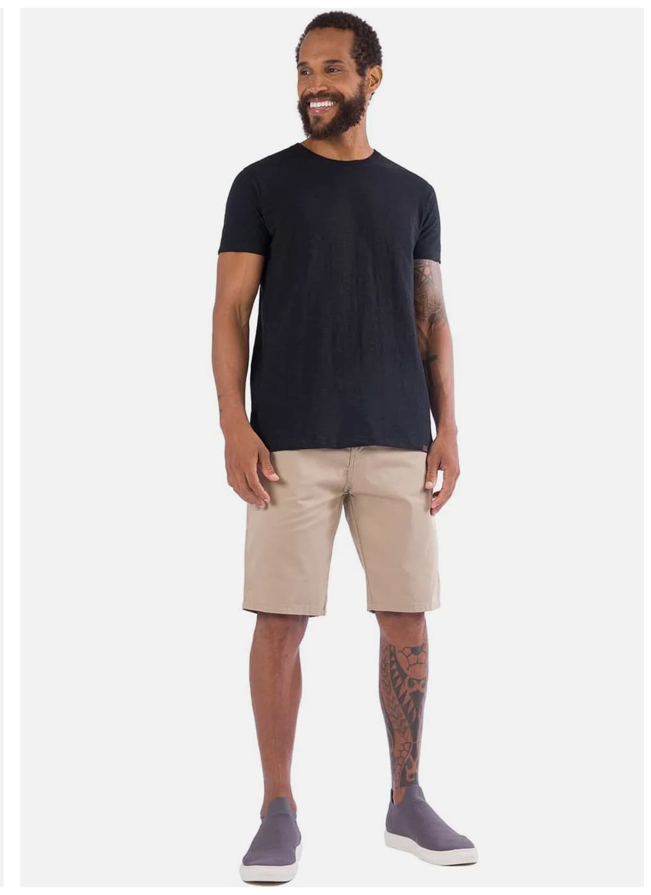
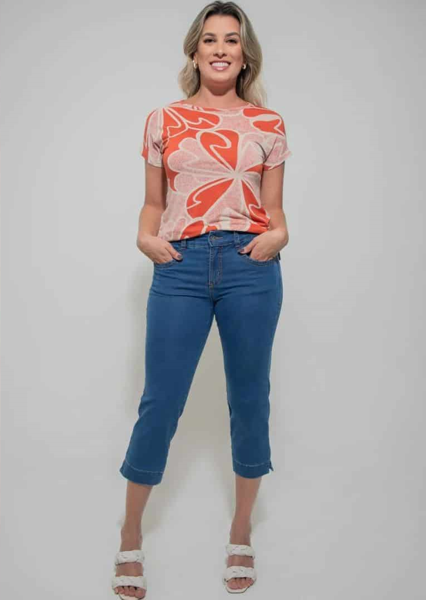
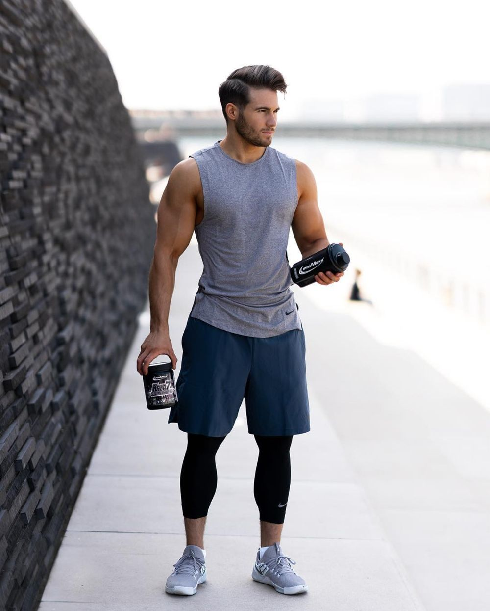
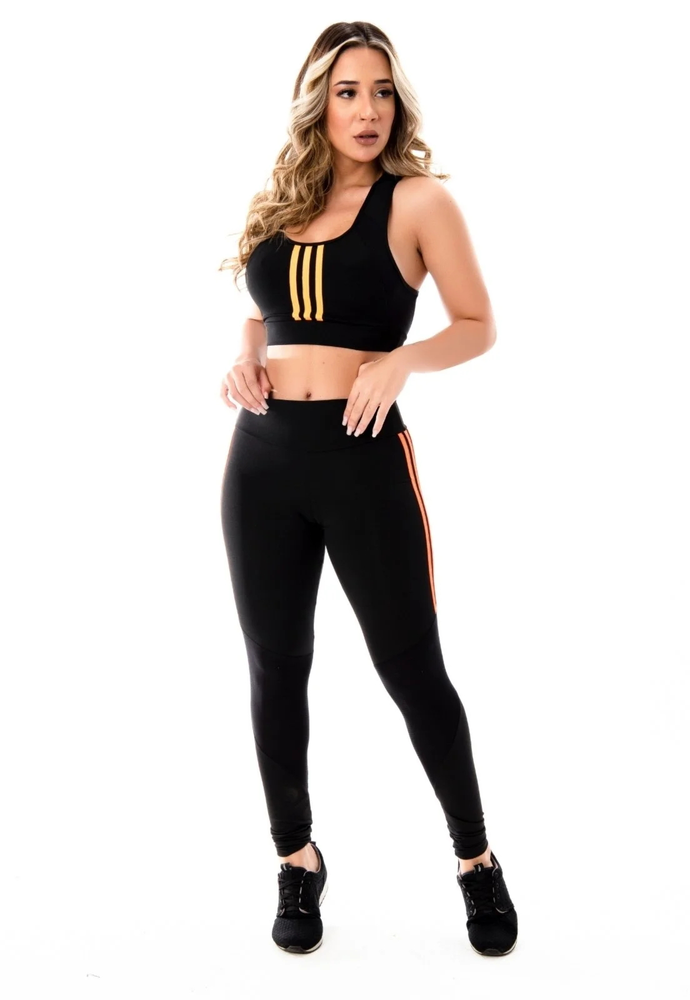

Este estilo é marcado pelo conforto e pela praticidade, sendo ideal para o dia a dia. As peças mais comuns incluem jeans, camisetas, suéteres, cardigãs e tênis. As roupas são geralmente de tecidos leves e flexíveis, proporcionando liberdade de movimento. O estilo casual é perfeito para passeios, encontros com amigos, idas ao cinema ou a um café. A ideia é estar bem-vestido de maneira descontraída e sem muita formalidade.


Este estilo é sinônimo de elegância e sofisticação, sendo ideal para eventos que exigem uma aparência polida e profissional. Inclui peças como ternos, gravatas, camisas sociais, vestidos longos, saias lápis, blazers e sapatos sociais. O estilo formal é usado em ambientes de trabalho, reuniões de negócios, casamentos, jantares de gala e outros eventos que exigem uma apresentação impecável. A escolha de tecidos de alta qualidade e cortes bem ajustados é fundamental para um visual formal adequado.


Este estilo é uma versão ainda mais relaxada do casual, ideal para momentos de lazer e descontração. Inclui roupas como shorts, bermudas, camisetas básicas, chinelos, sandálias, vestidos soltos e roupas de praia. O estilo informal é perfeito para passeios no parque, dias na praia, churrascos e outras atividades ao ar livre. As roupas são escolhidas pela sua leveza e conforto, proporcionando uma sensação de relaxamento.


Focado na funcionalidade e conforto para a prática de atividades físicas, este estilo é caracterizado por peças que oferecem suporte e flexibilidade. Inclui leggings, shorts de corrida, camisetas de tecido tecnológico, tênis de corrida, agasalhos, tops esportivos e acessórios como bonés e viseiras. O estilo esportivo é adequado para a academia, corridas, caminhadas, esportes coletivos e outras atividades físicas. As roupas são feitas de materiais que absorvem o suor e permitem a respirabilidade, ajudando a manter o corpo fresco e confortável durante o exercício.